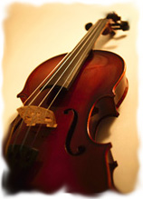

|
About the Winchester and County Music Festival The Festival originated from a meeting in the Winchester Guildhall on 30 September 1921 with the support of several distinguished musical personalities. Originally it was competitive with school choirs included but it also gave opportunities for participating choral groups to combine for the performance of major works under eminent adjudicator-conductors. The latter included Ralph Vaughan Williams, Herbert Howells, Sir Henry Wood and Sir Adrian Boult, working alongside soloists like Isobel Baillie, Owen Brannigan and Leon Goossens. Audience sizes and expanding choir numbers required a move to the Cathedral in 1942 and in 1977 the growth in choir sizes led to the use of Romsey Abbey as well. A programme for a week-long Festival in the 1980s included a social event, a Cathedral performance, a youth choir, a ladies choir, choral evensong, a chamber music recital and a performance in Romsey. Latterly, the established pattern is for two annual Spring concerts in Winchester Cathedral and Romsey Abbey respectively, a series of combined choir rehearsals, an advance 'taster day' on the selected repertoire and a choral workshop or 'Come & Sing' in the Autumn. The Compton & Shawford Festival Choir is the only society still in existence which performed in the first Festival, although Easton & Martyr Worthy (now known as the Itchen Valley Choral Society) and Winchester City joined the following year, followed by Botley in 1925. Photographs from the archives |
 |